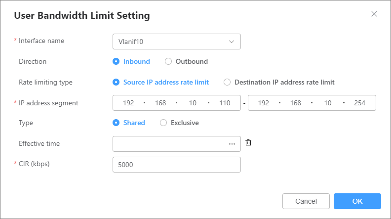
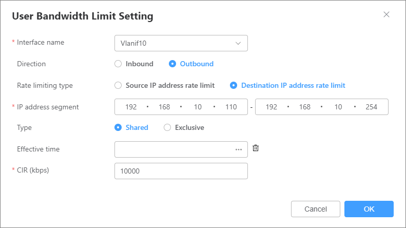
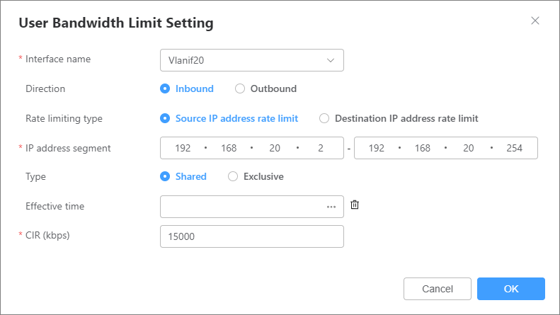
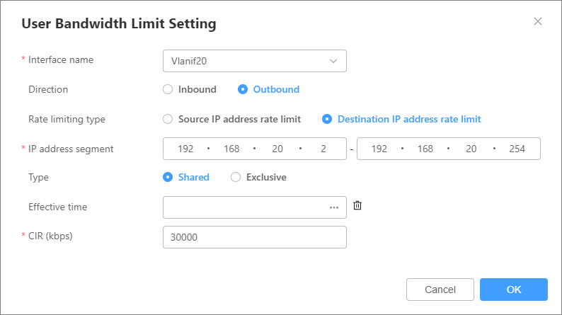

Example for Configuring QoS to Limit the Bandwidth Shared by Some Intranet IP Addresses
Applicable Product and Version
This example applies to all models of routers running V600R025C00 and later versions.
Networking Requirements
In Figure 1, Router serves as an enterprise's egress gateway and connects to the Internet through 10GE0/0/9. This interface is configured with a static IP address of 10.1.1.110/24, a gateway address of 10.1.1.1, and DNS server addresses 203.10.1.150 and 203.1.1.148. NAT is deployed on Router to enable Internet access for internal users through address translation. To regulate Internet access bandwidth, the enterprise wants to apply traffic rate limits to specific IP ranges. For IP addresses from 192.168.10.110 to 192.168.10.254 in the 192.168.10.0/24 subnet, the upload rate needs to be capped at 5 Mbit/s and the download rate at 10 Mbit/s, while other IP addresses in the same subnet are not subject to any rate limits. Additionally, it is required that users in the 192.168.20.0/24 subnet are limited to 15 Mbit/s for upload and 30 Mbit/s for download.
Configuration Roadmap
- Complete basic network configurations. If basic network configurations have been completed, skip this step and go to step 2.
Set parameters for 10GE0/0/9, such as the interface IP address and gateway address.
Create VLAN 10 and VLANIF 10, and specify VLANIF 10 as the gateway of the 192.168.10.0/24 subnet. Similarly, create VLAN 20 and VLANIF 20, and specify VLANIF 20 as the gateway of the 192.168.20.0/24 subnet. Add the Layer 2 Ethernet interface 10GE0/0/2 connecting Router to Switch to VLAN 10 and VLAN 20 as a trunk interface.
- Configure rate limits based on IP ranges on VLANIF 10 and VLANIF 20.
Procedure
- Configure an IP address for 10GE0/0/9, create VLANs 10 and 20, and add 10GE0/0/2 to the VLANs.
- Choose . The VLAN page is displayed, as shown in Figure 3.
- Click
 , select 10GE0/0/2, set the interface mode to Trunk, and click OK, as shown in Figure 5.
, select 10GE0/0/2, set the interface mode to Trunk, and click OK, as shown in Figure 5.
- Select
 next to Create a VLANIF Interface, and enter the IPv4 address 192.168.10.1 and mask 255.255.255.0, as shown in Figure 6.
next to Create a VLANIF Interface, and enter the IPv4 address 192.168.10.1 and mask 255.255.255.0, as shown in Figure 6.
Repeat this step to configure VLAN 20.
- Configure rate limits based on source IP ranges on the VLANIF interfaces.Choose . On the Network Behavior Management page that is displayed, click Create, configure upload and download rate limits for VLANIF 10 and VLANIF 20, and click OK.Figure 7 Configuring an upload rate limit for VLANIF 10

Figure 8 Configuring a download rate limit for VLANIF 10
Figure 9 Configuring an upload rate limit for VLANIF 20
Figure 10 Configuring a download rate limit for VLANIF 20

Precautions
- In this example, rate limits are configured on the interfaces connecting Router to the internal network. This approach is commonly used when rate limits are required for specific users or network segments within the internal network. Since NAT is configured on the Internet-facing interface on Router, applying rate limits for internal users on that interface will complicate the configuration, resulting in increased device resource consumption and degraded performance.
- Set Direction to Inbound or Outbound based on the direction of the traffic to be rate limited.
- For an intranet-facing interface, Inbound traffic refers to traffic traveling from internal PCs to the router, typically representing upload traffic sent by PCs to the Internet. Outbound traffic, by contrast, flows from the router to internal PCs, corresponding to download traffic received from the Internet.
- For a WAN interface, Inbound traffic denotes traffic entering the router from the Internet, representing download traffic destined for internal PCs. Outbound traffic refers to traffic leaving the router toward the Internet, indicating upload traffic originating from internal PCs.